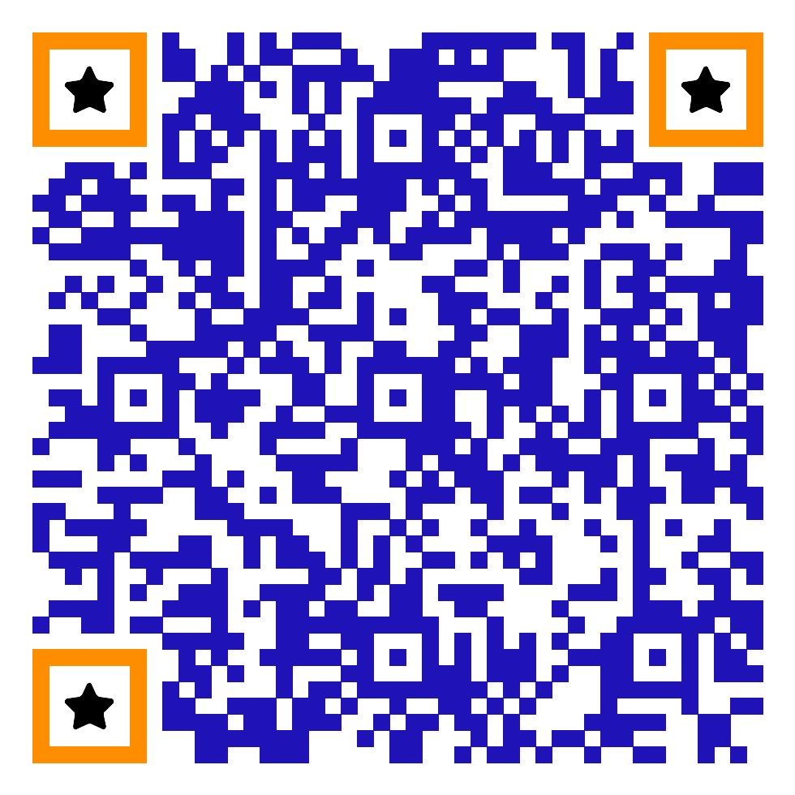

.png)
Rota Sul Logística
Missão
Oferecer serviços de transporte e distribuição que garantam eficácia, agilidade e segurança para pequenos e médios varejistas, contribuindo para o fortalecimento e crescimento de seus negócios.
Expandir e conectar empresas por meio de soluções eficientes, rápidas e acessíveis, entregando qualidade por preços justos.
Visão
Em 5 anos, dobrar a área de cobertura dos nossos serviços, ampliar a frota de veículos e tornar-se a transportadora mais eficiente da região Sul.
Eliminar a desintegração de informações, alcançando 100% de rastreabilidade automatizada e proporcionando maior controle e eficiência.
Negócio
Transporte e distribuição de mercadorias para pequenos e médios varejistas, oferecendo entregas rápidas, seguras, rastreáveis e otimizadas por meio de soluções tecnológicas e do comércio eletrônico para toda a região Sul.
Essência
Criar e manter pontes e relacionamentos duradouros entre nossos colaboradores, fortalecendo uma cultura de colaboração. Estendemos essa filosofia a todos os níveis da empresa e às nossas relações com clientes e parceiros.
Excelência
Buscamos realizar cada entrega com o mais alto nível de qualidade, eficiência e responsabilidade.
Segurança
Prezamos pela proteção, integridade e confiabilidade das mercadorias durante todas as etapas.
Comunicação
Nossa atuação é baseada na comunicação clara, na colaboração e no trabalho em equipe.
Inovação
Integramos e implementamos tecnologias que tornam nossos processos mais eficientes.
Diversidade e inclusão
Valorizamos a pluralidade de identidades, promovendo um ambiente ético e humanizado.
Automação de Processos
O que é: Aplicação de soluções tecnológicas personalizadas para automatizar tarefas rotineiras, minimizando falhas e reduzindo custos. Dados não ficarão presos em planilhas.
Integração automática das informações em uma única solução. Reduz a fragmentação dos dados, garantindo maior organização e operação ágil.
Desenvolvimento de Site / Web
O que é: Elaboração e implementação de plataformas digitais focadas em usabilidade. A empresa possui interface de gestão unificada das rotas.
Criação de um sistema web centralizado que conecta a RotaSul aos usuários, permitindo rastreamento em tempo real da mercadoria.
Desenvolvimento de Aplicativos
O que é: Criação de aplicativos seguros e intuitivos para melhorar a experiência do usuário e ampliar a interação móvel.
Aplicativo voltado para os entregadores na rua, permitindo atualização do status na palma da mão e eliminando papelada.
Estudo de Tempos
O que é: Mapeamento e cronometragem de cada etapa do ciclo de entrega, identificando gargalos e tempo ocioso.
Permite à RotaSul enxergar onde a frota perde tempo, eliminando quilômetros desnecessários e garantindo pontualidade.
Não conformidades
1. Dispersão de dados
Informações de clientes, pedidos, rotas e entregas são registradas de formas diferentes, dificultando o controle.
Solução: Centralização dos dados em um sistema único.
2. Excesso de atividades manuais
O acompanhamento de pedidos e entregas possui tarefas repetitivas que reduzem a produtividade.
Solução: Automação dos processos repetitivos.
3. Rotas pouco eficientes
A falta de otimização das rotas pode aumentar o tempo e os custos operacionais.
Solução: Utilização de roteirização automatizada com IA.
Análise SWOT
Forças
- Crescimento da operação
- Atuação na Região Sul
- Atendimento a pequenos e médios varejistas
Fraquezas
- Dados dispersos
- Processos pouco integrados
- Excesso de atividades manuais
Oportunidades
- Crescimento do comércio eletrônico
- Uso de automação e IA
- Expansão da base de clientes
Ameaças
- Aumento da concorrência
- Aumento dos custos operacionais
- Maior exigência por agilidade
Plano de Ação — 5W
Ação integrada: Centralização e automação da operação logística
| What — O quê? | Centralizar os dados e automatizar os processos. |
|---|---|
| Why — Por quê? | Eliminar dispersão de informações, reduzir atividades manuais e melhorar rotas. |
| Where — Onde? | Nos processos operacionais relacionados a clientes, pedidos e rotas. |
| When — Quando? | Implementação em 6 meses, conforme OKRs. |
| Who — Quem? | Equipes de tecnologia e operação da RotaSul. |
Plano de Ação — 3H1S
Ação integrada: Centralização e automação da operação logística
| How — Como? | Implantar um TMS, centralizar dados, automatizar tarefas e usar IA. |
|---|---|
| How much — Quanto? | Investimento de R$ 150.000,00 para execução inicial. |
| How many — Volume? | 100% de visibilidade automatizada e reduzir em 30% tempo médio. |
| Safety — Segurança? | Garantir integridade e confiabilidade das informações. |
Matriz GUT
| Não Conformidades | G | U | T | TOTAL (GxUxT) |
|---|---|---|---|---|
| Dispersão de dados: Informações registradas de formas diferentes. |
4 | 2 | 5 | 40 |
| Rotas pouco eficientes: Falta de otimização aumentando tempo. |
4 | 4 | 2 | 32 |
| Excesso de atividades manuais: Tarefas repetitivas reduzem a produtividade. |
2 | 2 | 4 | 16 |
Prioridade Resultante
Dispersão de dados (40) → Rotas pouco eficientes (32) → Excesso de atividades manuais (16).
Resolução
A RotaSul deve concentrar seus esforços na centralização e automação da operação logística. A integração dos dados permitirá maior controle dos processos, enquanto a automação reduzirá atividades manuais e a IA contribuirá para rotas mais eficientes.
Assim, o plano atua diretamente nas três não conformidades prioritárias e cria uma operação mais integrada, produtiva e eficiente, alinhada aos objetivos de Integrar, Conectar e Crescer.
Centralizar → Automatizar → Otimizar → Crescer
Nosso Portal Digital
Aponte a câmera do celular para acessar a plataforma personalizada da RotaSul.

OBJETIVO 01
Descrição
Transformar dados e operações dispersas em uma estrutura integrada, automatizada e rastreável.
Alcançar 100% de visibilidade automatizada através de nosso software em todas as entregas para as cidades da região Sul até dezembro de 2026.
Automatizar o cálculo de rotas com IA e reduzir os custos operacionais oriundos de rotas mal otimizadas em 15% nos próximos 6 meses.
Incluir 100% das rotas, clientes e processos em um banco de dados centralizado em 6 meses, acabando com a dispersão de dados.
Projeção de Resultados
OBJETIVO 02
Descrição
Fortalecer a conexão com clientes e parceiros para ampliar a qualidade e o alcance da operação.
Reduzir em 20% o número de reclamações relacionadas a atrasos, falhas de comunicação e problemas nas entregas nos próximos 6 meses.
Alcançar NPS 75% ou mais de satisfação dos clientes com os serviços de transporte e distribuição, ao final dos próximos 6 meses.
Estabelecer uma rede de parceiros estratégicos para ampliar a cobertura geográfica, sem necessariamente exigir crescimento proporcional da frota própria.
Projeção de Resultados
OBJETIVO 03
Descrição
Expandir a base de clientes, a área de atuação e a capacidade operacional da RotaSul.
Automatizar 50% da prospecção de novos clientes no próximo ano e aumentar em 200% a base de clientes nos próximos 3 anos.
Em 5 anos, dobrar a área de atuação, realizando serviços na maioridade da região Sul de forma a se tornar referência regional.
Dobrar o número de veículos da frota em relação à linha de base atual até o final do 5º ano.